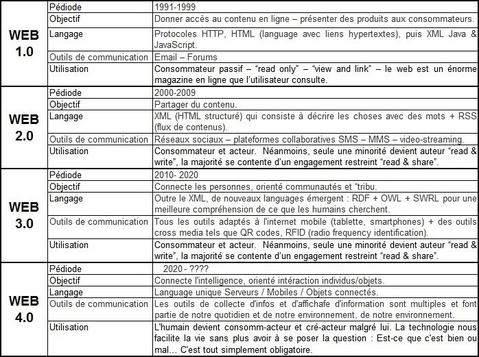

Questions/Réponses sur le Web de 1 à 6
Question 1 :
"Qu’est-ce qu’un navigateur Web ?"
Un navigateur Internet est un logiciel informatique qui permet à un utilisateur d'accéder à Internet. En anglais on parle de Web Browser tels que Safari, Firefox ou encore Chrome . Au coeur du logiciel, il y a un moteur de rendu visuel qui interprète l'HTML contenu dans une page Internet.
Question 2 :
"De quoi se compose un navigateur Web ?"
Un navigateur Web est composé de divers modules logiciels, des standarts réseaux, d'un moteur de rendu des standards du Web, d'une interface utilisateur adapté au système d'exploitation et accessoirement d'un gestionnaire d'extensions.
Question 3 :
"Qu’appelle t’on « standards du Web » ?"
Les normes du Web (standards du web) sont différentes technologies et protocoles utilisés sur le Web. Elle se réfère essentiellement aux technologies formant le socle principal d'un document web : le HTML et le XHTML, les feuilles de style en cascade (CSS).
Question 4 :
"Qu’appelle t’on « interface utilisateur » ?"
L’interface utilisateur est un dispositif matériel ou logiciel qui permet à un usager d'interagir avec un produit informatique. C'est une interface informatique qui coordonne les interactions homme-machine, en permettant à l'usager humain de contrôler le produit et d'échanger des informations avec le produit.
Question 5 :
"Qu’appelle t’on « plug in » ?"
Un plug-in est un paquet qui complète un logiciel hôte pour lui apporter de nouvelles fonctionnalités.
Question 6 :
"Faites un historique de l’évolution du web."
C'est donc en 1991 que le web fait son apparition, le tableau ci-dessous en témoigne.
